タッチ、タッチ、タァーッチ！ [梅吉]
ご飯をもらうときはお約束の
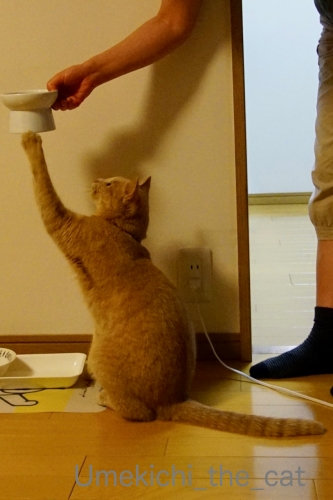
ターッチ！
三回タッチするのがデフォルトなんですが
お腹が空いていて気持ちが逸るのか連打になることが多いですw
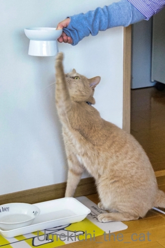
おやつをもらうときもターッチ！
どちらの写真も左手が上がってますね。梅吉は左利き？
でも夜中に私を起こすときは右手でていてい。
左右器用に使い分けるスイッチヒッターみたいなかんじなのでしょうか(≧▽≦)
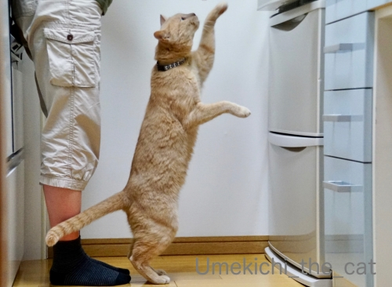
冷蔵庫の前では立ち上がってターッチ。
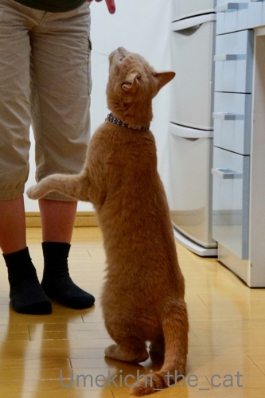
おかーさんの指には・・・タッチはないけど立ち上がってくんくん。
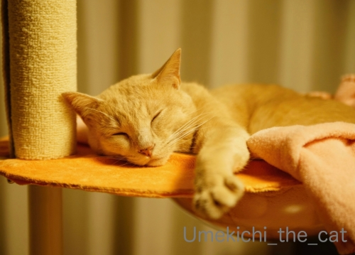
PCの前の皆さんにもターッチ♡
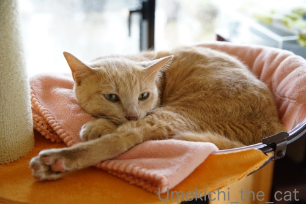
![[猫]](https://blog.ss-blog.jp/_images_e/101.gif) あちにも たっちしてええで
あちにも たっちしてええで
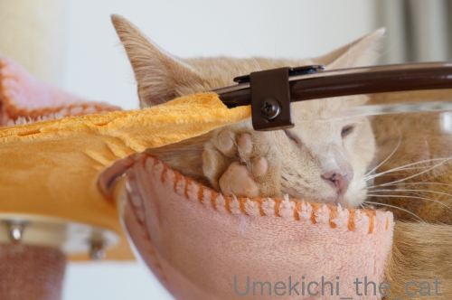
クリアボウル生活も順調です！
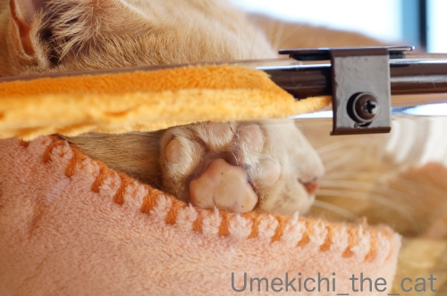
しつこいわっ！って思われちゃいそうですが
嬉しいので何度も載せちゃいますよ、にくきゅううううう。
 ↑ガブッと一押し↑
↑ガブッと一押し↑
今夜は準々決勝！日本v南アフリカ。
どちらのチームもベストなプレイが出来ますように！！
全記事で触れたスーパーラグビーに参戦している唯一の日本チームサンウルブズの公式HPで
面白いものを見つけました＾＾
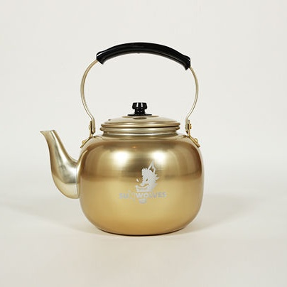
（サンウルブズの公式HPより）
「魔法の水」の出るやかんwww
昔のラグビーの試合では選手が倒れるとこのやかんを持ったスタッフが走ってきて
倒れている選手にジャーっと。
するとあら不思議、選手はむっくりと起き上がってプレイする・・・というスタイルでした。
今はこんな場面見なくなりましたけど( ´艸｀)
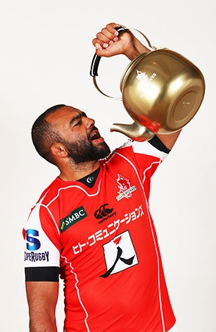
（サンウルブズの公式HPより）
リーチマイケル 選手が使用方法を指南してくれてます。
（リーチマイケル 選手は現在サンウルブズ所属ではありません）
『商品説明には夏にはビールピッチャーとしても活用できるアイテムです！』
と書いてありましたよw
酒豪の皆さん、いかがでしょうか0(≧▽≦)0
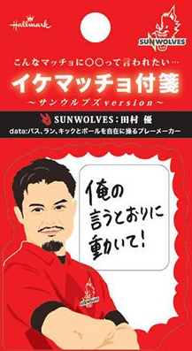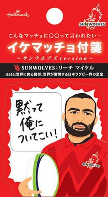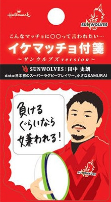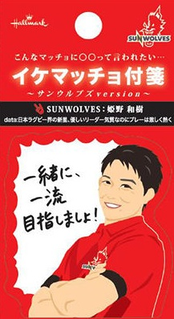
（サンウルブズの公式HPより）
こんな付箋も。
姫野くんが似てないですヾ(*ΦωΦ)ﾉ
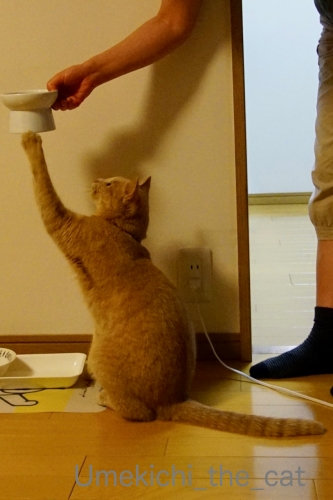
ターッチ！
三回タッチするのがデフォルトなんですが
お腹が空いていて気持ちが逸るのか連打になることが多いですw
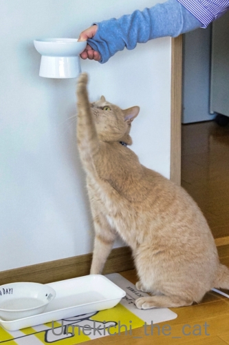
おやつをもらうときもターッチ！
どちらの写真も左手が上がってますね。梅吉は左利き？
でも夜中に私を起こすときは右手でていてい。
左右器用に使い分けるスイッチヒッターみたいなかんじなのでしょうか(≧▽≦)
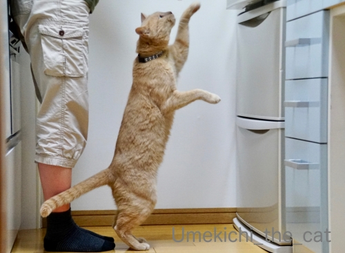
冷蔵庫の前では立ち上がってターッチ。
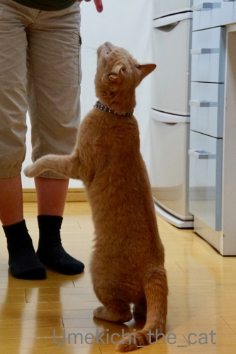
おかーさんの指には・・・タッチはないけど立ち上がってくんくん。
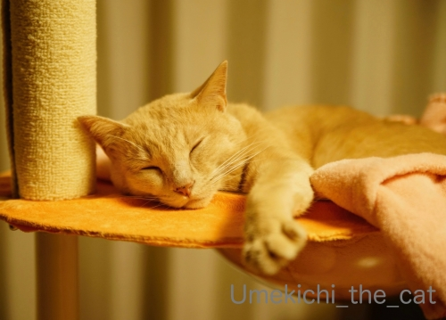
PCの前の皆さんにもターッチ♡
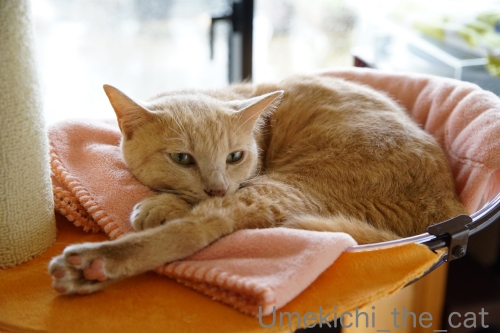
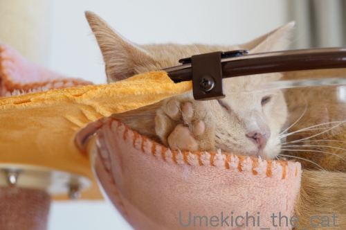
クリアボウル生活も順調です！
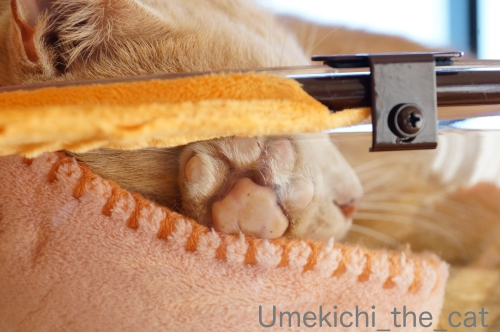
しつこいわっ！って思われちゃいそうですが
嬉しいので何度も載せちゃいますよ、にくきゅううううう。
今夜は準々決勝！日本v南アフリカ。
どちらのチームもベストなプレイが出来ますように！！
全記事で触れたスーパーラグビーに参戦している唯一の日本チームサンウルブズの公式HPで
面白いものを見つけました＾＾
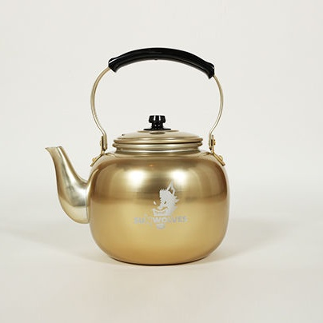
（サンウルブズの公式HPより）
「魔法の水」の出るやかんwww
昔のラグビーの試合では選手が倒れるとこのやかんを持ったスタッフが走ってきて
倒れている選手にジャーっと。
するとあら不思議、選手はむっくりと起き上がってプレイする・・・というスタイルでした。
今はこんな場面見なくなりましたけど( ´艸｀)
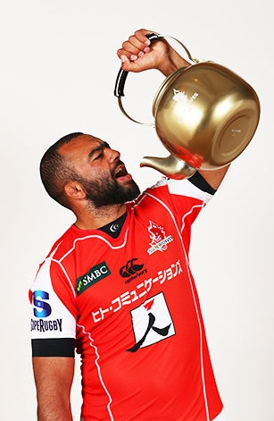
（サンウルブズの公式HPより）
リーチマイケル 選手が使用方法を指南してくれてます。
（リーチマイケル 選手は現在サンウルブズ所属ではありません）
『商品説明には夏にはビールピッチャーとしても活用できるアイテムです！』
と書いてありましたよw
酒豪の皆さん、いかがでしょうか0(≧▽≦)0
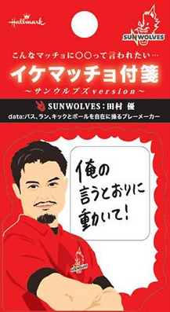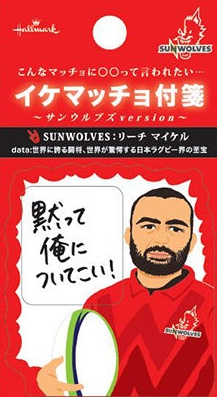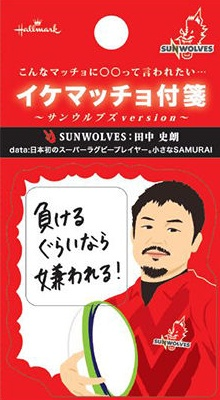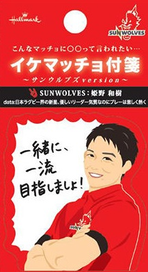
（サンウルブズの公式HPより）
こんな付箋も。
姫野くんが似てないですヾ(*ΦωΦ)ﾉ

カフェオレ色の梅吉

梅吉 2023年8月10日 永眠


梅吉と出会った譲渡会

犬猫の理由なき殺処分ゼロ
妄想広告
UMEKICHI 光

爆発的に早い！
時々攻撃的！
Thanks to Mr.Boss365
爆発的に早い！
時々攻撃的！
Thanks to Mr.Boss365

梅吉さんのお手手とアンヨにペチペチして肉球も堪能しました~。
by zombiekong (2019-10-21 00:52)
特技があるんですね、いいなぁ＾＾
by ぽちの輔 (2019-10-21 07:06)
梅吉さん、綺麗なタッチですねぇ=(^.^)=
うちはニケだけがおやつの時、自分の順番をアピールするために
立ち上がって「ちょうだいな」します＾＾
私があげてる時はペシッと奪っていきますが(⌒-⌒; )
PCで梅吉さんの手と足にタッチさせていただいた後に
クリアボールの肉球にもタッチさせていただきました*･'(*ﾟ▽ﾟ*)'･*
by ニッキー (2019-10-21 07:15)
梅吉さんにタッチ♪
肉球は何度見てもニヤニヤしちゃいますねぇ～♪
にゃんこさんの肉球は
プニュプニュで柔らかそうです！！
Ｌｅａは・・・ガサガサです(;^_^A
by きぃ (2019-10-21 07:41)
梅吉さんご飯の時に縦に伸びるのですね！
ラグビーはやかんは今では禁止になっていますね(^^)
by ma2ma2 (2019-10-21 08:33)
利き腕がどっちなのか謎ですねー。
ラグビー日本代表、残念でしたが
向こうのかなり本気だしてきてたんで
あの実力差が現実なのかも。。。
魔法のヤカン、これで酒飲むと異常に早く
酔いが回りそうぅぅぅ(≧∀≦)
by よーちゃん (2019-10-21 08:37)
梅吉さん、立ってる！もう直ぐ二本足で歩けますよ！
にゃんげんになれるのももう少しではないでしょうかー。
ニャンコの利き手、どうなんでしょうね。気になります。
ラグビー残念でしたが、それでもここまで本当によくやった！と思いますねー。
by ChatBleu (2019-10-21 08:40)
梅吉さんのごはん３回タッチ、リズミカルな「はよ、はよ、はよして～っ」の合図なんですね^^
我が家は「お手」が基本なんですが、もともとはこてつの肉球をニギニギしたくて始めたことでございます(≧▽≦)
クリアボウルも作戦バッチリですね♪
ラグビー、昨夜は残念でした。南ア強かった～。
長い間世界のトップで戦っているチームの底力を感じました。
ラインアウトのボールってあんなに奪われるんや、モールでそのまま押し込むってこういう事なんや等々、「にわか」には新たな驚きと発見てんこ盛りでした。
小柄なデクラーク選手、スッと現れてボール取っちゃうし、大男をタックルでひっくり返すし、腹立つぐらいすごかった^^;
すごく面白かったし、ドキドキわくわくしたし、ラグビーに感謝感謝です(#^^#)
by ゆきち (2019-10-21 12:16)
こんにちは。
梅吉くん、上手ですね。芸達者です。
二足歩行も夢でない感じですね。後ろ足タッチもナイスです。
ところで、ちぃさん、足長くパンツが短めになっています？
カラーコーデもお洒落ですね。
「魔法の水」懐かしいですね。意外といい値段？
凹み易いのが難点ですが、良い色しています。
リーチさんの様に片手では飲めません（笑）！？(=^･ｪ･^=)
by Boss365 (2019-10-21 12:44)
ご飯の際にはこのタッチをお約束にしているのですね(^^
立ちあがっておかーさんの指をクンクンそうなのか～
うちは立ちあがってまではしません。ご飯も殻のお皿を眺めてにゃ～と
悲しそうな目で鳴くというスタンダードなアピールですｗ
昨夜のラグビーは残念でした。男泣きするメンバーを見ていると
もらい泣きしそうでした。
ラグビーといえばこのデカイやかん♪時代はもう今は昔なのですね。
あれをビールピッチャーかぁｗｗ
注ぐ度に筋力アップもできる優れもの♪でしょうか。
イケマッチョ付箋なんてものも出ているのですか！W杯は終わってもグランドの外でしばらく熱い姿が見られそうですね。
by marimo (2019-10-21 13:38)
ボクシングの神の左と言われた山中慎介さんも実は右利きといいますからね。
夜中に起こすときが真剣なのかも（笑）
by yamatonosuke (2019-10-21 14:37)
梅吉さんの日常的なこの仕草はある意味凄いですよね。
肉球、堪能させて頂きました。ありがとう、梅吉さん(^^)
by kou (2019-10-21 15:23)
あーーん。タッチがかわいすぎます～(≧∀≦)
私にもタッチしてーー！と言いたくなりますｗｗ
眠っているお手手、むぎゅむぎゅしていいですか？(笑)
クリアボウルに押し付けられた肉球もたまりません！！
あっちこっちタッチしちゃうぞｗ
ラグビー、がんばりましたよね！！！
でも南アは強かったなぁ＾＾でも本気出してくれて
うれしかったですよね♪いい試合でした❤
これからまた進化するのでしょうね。
付箋、リーチさんの再現度がすばらしいｗｗ
by カトリーヌ (2019-10-21 16:56)
正直なところ、ラグビーが盛り上がってほっとしました。決まった時はどうなるものかと大変心配しておりましたので……
by 小松達也 (2019-10-21 17:55)
梅吉さん、沢山タッチしましたよ。
立っちも上手です。
今にも歩き出しそう。
肉球も、もちろんタッチ（笑）
楽しませて頂いて幸せ（笑）
ラグビー、南ア強かったですね〜
by kiki (2019-10-21 21:23)
はやくちょーだい！！のポーズかなあ。
PCの前の小生、タッチしましたっ！！ ^^;
クリアボウル越しでも肉球に触ると
やっぱり温かいのでしょうか。^^)
by yes_hama (2019-10-21 21:36)
♪タッチ、タッチ、ここにタッチ、あなたからタァーッチ！（ﾟ□ﾟ）
良い運動にもなりそうだねw
by 英ちゃん (2019-10-22 00:01)
梅吉さん、上手に立っちしてのお約束タッチ！？
なんて可愛いの～～＾＾
クリアボウルも生かされてますね！
ラグビー、面白かったです。
意味はよくわかってませんが、色々な動きがあって、体格の違う選手にもそれぞれしどころがあって＾＾
なぜ姫野が似てないのかしら＾＾；
by sana (2019-10-22 01:04)
ピンクの可愛い肉球ですね
やわらかそう～
タッチでご挨拶、可愛くていいな～♪
by 藤並 香衣 (2019-10-22 02:01)
そうだそうだ。タッチしてた！^^
梅吉くんのタッチ！
PCの前で手を伸ばしたよ〜〜〜ｗｗ
もう！
タッチなんて聞いたらカラオケに行きたくなるのはお約束過ぎるよ〜。
♪タッチ タッチここにタッチ！♪
だめだ、今日は脳内リピ決定だ。
by リュカ (2019-10-22 11:10)
ナイスにくきう。
くんくん、てしてしされたいわあ。
by liang (2019-10-22 17:11)
待ちきれない時は連打になっちゃうだなんて！！
可愛いだろうな～っ(≧▽≦)
家はこういうのできる子がだれもいない・・・。
嬉しいときのタッチ、タッチではないけど
チューしようとしてるとき、「やめろっ！！」って、何度も何度も肉球で
ディフェンスされちゃうことは多々ありますｗ
by emi (2019-10-22 17:11)
東急リバブルのCMでぐっさんが「オス猫はだいたい左利き」みたいなことを言ってた気が・・・違うのかな。ナノときなこ観察してみます(#^.^#)
by palpal (2019-10-22 20:49)
立ち上がるのでターッチですね。
これぐらいしか浮かばない自分が情けない＾＾；
ターッチする梅吉さん、素敵＾＾
by riverwalk (2019-10-22 21:49)
梅吉さんのタッチ
ノックオンしないでねー・・
魔法のヤカン・・・懐かしすぎる。
これを知っているのは
１９８０年以前のラグビーファンにゃっ
日本列島を揺るがした日本代表
one team!!
１か月の感動をありがとう！！
by ぱだおくん (2019-10-22 22:44)
梅吉さん、タッチ背筋が伸びて姿勢が良いですね。
by ニコニコファイト (2019-10-23 07:20)
梅吉さん、今日のタッチも良い感じです（笑）
ちぃさん、右手どうかしましたか？
寒さ対策には早いような（私のレッグウォーマは年中ですがww）
by kiki (2019-10-23 23:33)